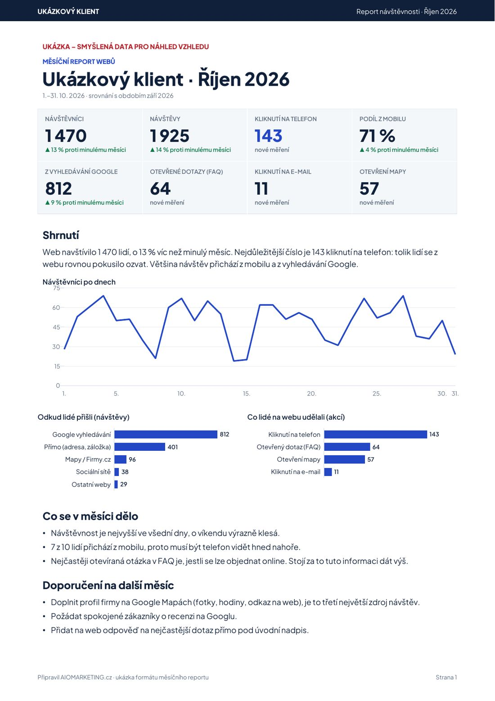

Weby pro malé firmy, ordinace a služby
Web, který vám nosí poptávky. A každý měsíc vidíte kolik.
Postavíme vám rychlý web, připravíme ho tak, aby vás správně pochopil Google i ChatGPT, a měříme, kolik lidí na něm klikne na telefon nebo e-mail. Na začátku každého měsíce vám přijde report s čísly a doporučením, co zlepšit.
Web od 14 900 Kč, péče a report od 1 490 Kč měsíčně (bez DPH). Úvodní hovor trvá 20 minut a je zdarma.

Jen webyPrezentační weby pro firmy a služby. E-shopy neděláme.
Report každý měsícPDF z Google Analytics s komentářem lidskou řečí.
Za službou stojí Edu PartnersVzdělávací firma, která od roku 2011 učí lidi marketing a práci s AI.
Co od nás dostanete
Web, který dělá jednu věc: přivádí zákazníky k telefonu. A každý měsíc čísla, podle kterých poznáte, jestli to funguje.
Web, na kterém se lidé hned zorientují
Telefon, adresa, otevírací doba a služby jsou vidět hned nahoře, hlavně na mobilu. Odtud k vám přichází většina lidí.
Web, kterému rozumí Google i ChatGPT
Na web doplníme údaje o firmě ve formě, které rozumí vyhledávače i AI: kdo jste, kde jste, kdy máte otevřeno a co děláte. Když se někdo zeptá třeba „kde v Ostravě rychle seženu ortopeda“, mají o vás správné informace.
Měření toho, co přináší zákazníky
Nesledujeme jen návštěvnost. Měříme kliknutí na telefon, e-mail a mapu a které otázky na webu lidé nejčastěji rozkliknou.
Měsíční report v PDF
Čísla za minulý měsíc, srovnání s tím předchozím, komentář bez žargonu a 2–3 konkrétní doporučení. Přijde e-mailem.
Drobné úpravy během roku
Změnili jste otevírací dobu, ceník nebo přibyla služba? Napíšete nám a my to na webu upravíme.
Nikdo vám poctivě nezaručí, že vás ChatGPT doporučí. My zajistíme, aby o vás měl úplné a pravdivé informace, a každý měsíc vám ukážeme, co se na webu skutečně děje.
Měsíční report: vidíte, za co platíte
Report vzniká automaticky z Google Analytics včetně komentáře. Než vám ho pošleme, každý osobně zkontrolujeme. Píšeme pro majitele firmy, ne pro marketéra.
- Kolik lidí přišlo
- Návštěvníci a návštěvy, srovnání s minulým měsícem, graf po dnech.
- Kolik se jich chtělo ozvat
- Kliknutí na telefon a e-mail. Pro většinu firem nejdůležitější číslo.
- Odkud přišli
- Google vyhledávání, mapy, sociální sítě, přímé návštěvy, jiné weby.
- Na co se ptají
- Které otázky na webu lidé otevírají nejčastěji. Napoví, co dát víc na očí.
- Co dělat dál
- 2–3 doporučení na další měsíc, vždy podložená čísly z reportu.
Podívejte se na ukázku
Dvě strany A4 ve stejném formátu, jaký dostává ORTOCENTRUM. Čísla v ukázce jsou ilustrativní.
Stáhnout ukázku (PDF, 33 kB)Ceník
Platíte jednou za web a potom měsíčně za péči a report. Bez měsíční péče weby neděláme. Web bez měření a údržby po roce zastará a nikdo neví, jestli funguje.
Start
Pro firmu nebo ordinaci, která potřebuje dobrý web a přehled, co přináší.
- Web na míru, rychlý na mobilu
- Údaje o firmě připravené pro Google a ChatGPT
- Měření kliknutí na telefon, e-mail a mapu
- Měsíční report v PDF s komentářem
- Správa webu a drobné úpravy údajů
Růst
Pro firmu, která chce, aby web každý měsíc přidával obsah a rostl ve vyhledávání.
- Vše ze Startu
- Průběžné úpravy obsahu
- 1 nový článek nebo odpověď na častý dotaz měsíčně
- Jednou měsíčně ověříme, co o vás odpoví ChatGPT a další asistenti
- Čtvrtletní konzultace nad výsledky
Ceny jsou bez DPH. Minimální doba měsíční péče je 12 měsíců. První rok celkem: Start 32 780 Kč, Růst 65 780 Kč. Přesnou cenu potvrdíme po úvodním hovoru podle rozsahu webu.
PPC kampaně a grafiku zajistíme přes specialisty z naší lektorské sítě. Cena podle rozsahu.
Jak to probíhá
Hovor
20 minut zdarma. Zjistíme, odkud k vám chodí zákazníci a co má web umět.
Návrh a cena
Pošleme vám strukturu webu a pevnou cenu. Nic nezačne, dokud neřeknete ano.
Web k připomínkám
Uvidíte hotovou verzi na zkušební adrese, připomínkujete, upravíme.
Spuštění a první report
Spustíme web a zapneme měření. První report přijde po prvním celém měsíci.
Na čem jsme to vyzkoušeli
Jsme nová značka, proto ukazujeme jen to, co si můžete sami ověřit.
Zdravotnictví · Ostrava a okolí
ORTOCENTRUM®
Síť ortopedických ambulancí: hlavní pracoviště v Ostravě-Porubě a pobočky ve Slezské Ostravě a Bílovci.
ortocentrumov.cz
ortocentrumslezska.cz
ortocentrumbilovec.cz
ortocentrum-msk.cz
Co jsme udělali
- Čtyři weby na vlastních doménách, propojené do jedné sítě
- Lékaři, ordinační hodiny, adresy a výkony ve strukturovaných datech
- Soubor llms.txt se vším, co pacient potřebuje k objednání
- Měření kliknutí na telefon, e-mail, mapu a otevřené dotazy
- Automatický měsíční report pro majitele
Vlastní web zakladatele
michalmicek.cz slouží jako zkušební pole: strukturovaná data, llms.txt a vlastní záznam ve Wikidata, ze kterých AI asistenti čerpají informace o lidech a firmách. Nové postupy zkoušíme nejdřív tady, teprve potom u klientů.
Co se o vás dozví ChatGPT
Vedle běžného webu dostane každý klient soubor llms.txt: stručný přehled pro AI asistenty, bez reklamních řečí.
- Kdo jste a kde vás najdou. Název, adresy, pobočky, odkazy.
- Co děláte. Služby tak, jak se na ně lidé ptají.
- Kdy máte otevřeno. Ordinační nebo otevírací hodiny po dnech.
- Jak se objednat. Telefon, e-mail, podmínky, s kým máte smlouvu.
Ukázka vpravo je výňatek ze souboru, který jsme připravili pro síť ortopedických ambulancí ORTOCENTRUM® v Ostravě. Celý je veřejně na ortocentrumov.cz/llms.txt.
# ORTOCENTRUM® Ostrava-Poruba > Specializovaná ortopedie v Ostravě. Hlavní web > sítě ortopedických ambulancí ORTOCENTRUM® (od roku 1993) ## Služby - Léčba sportovních poranění pohybového aparátu - Aplikace obohacené krevní plazmy (PRP) ## Objednání - K vyšetření je třeba se objednat, nejlépe telefonicky - Smluvní pojišťovny: 111 VZP, 201 VoZP, 205 ČPZP, 211 ZPMV, 213 RBP …
Kdo vám web udělá
Michal Míček
Mgr., LL.M. · zakladatel Edu Partners a AIOMARKETING.cz
Přes 14 let v e-commerce, fintechu a vzdělávání. V roce 2011 založil Edu Partners, akreditovanou vzdělávací firmu s kurzy v Praze a Ostravě. Dnes školí firmy v práci s umělou inteligencí.
Weby a reporty dělá stejným postupem, jaký učí na kurzech. Mluvíte s ním přímo, ne s obchodníkem.
Časté otázky
Děláte e-shopy?
Ne. Děláme prezentační weby pro firmy, ordinace a služby, kde je cílem telefonát, e-mail nebo návštěva. E-shopy vyžadují jiný provoz i podporu.
Zaručíte, že mě doporučí ChatGPT?
Ne, to poctivě zaručit nejde. Zajistíme, aby o vás AI asistenti i Google měli úplné a aktuální informace ve formě, které rozumí, a měříme, co se na webu děje.
Co je soubor llms.txt?
Textový soubor na vašem webu, který AI asistentům stručně a přehledně říká, kdo jste, co nabízíte, kde vás najdou a jak se objednat. Ukázku najdete v části „Co se o vás dozví ChatGPT“.
Proč je minimální doba 12 měsíců?
Výsledky ve vyhledávání se projevují v řádu měsíců, ne týdnů. Report má smysl, až když je s čím srovnávat.
Už web mám. Můžete ho jen převzít a reportovat?
Záleží na tom, na čem web běží a v jakém je stavu. Probereme to na úvodním hovoru, stačí poslat adresu webu.
Domluvme si 20 minut
Nejrychlejší je zavolat. Nebo napište pár vět o své firmě a adresu současného webu, pokud ho máte. Ozveme se.
Do e-mailu stačí napsat:
- čím se vaše firma zabývá a kde,
- adresu současného webu, pokud ho máte,
- kdy se vám hodí zavolat.